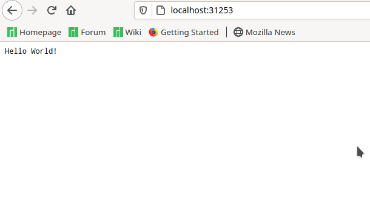

This tutorial shows you how to create a cluster for the Power architecture (ppc64le) using Minikube.
The tutorial was performed on Ubuntu 20.10 (ppc64le), the packages were downloaded using the package repository from OpenPower Lab @ Unicamp.
Dependencies
The following packages are required:
- Minikube
- Kubectl
- Docker-ce
- Conntrack
You can use the commands below to solve the dependencies:
apt-get update
apt-get install docker-ce conntrack minikube kubectl
Optionally, Kubeadm and Kubelet can be installed.
Create a minikube cluster
- Start Minikube
sudo minikube start --driver=none
The default drive is Docker, however the minikube does not recognize that Docker is available for ppc64le architecture and has an error.
To make ’none’ the default drive, use the command:
sudo minikube config set driver none
You may need to run the command::
sudo sysctl fs.protected_regular=0
- Check Status
sudo minikube status
The output is similar to:
minikube
type: Control Plane
host: Running
kubelet: Running
apiserver: Running
kubeconfig: Configured
- Open the Kubernetes dashboard in a browser
sudo minikube dashboard
Create a Deployment
There are two structures in Kubernetes: Pod and Deployment. Pod can be a group of one or more Containers, while a Deployment checks, manages and restarts the pods. That is, the deployment is recommended when it will be used in a large group of pods.
- Create a Deployment
sudo kubectl create deployment hello-node --image=minicloud/node-server
minicloud/node-server: is a public docker image created for the ppc64le architecture. The files used to build the image are in the GitHub.
- View the Deployment:
sudo kubectl get deployments
The output is similar to:
NAME READY UP-TO-DATE AVAILABLE AGE
hello-node 1/1 1 1 6m28s
- View the Pod:
sudo kubectl get pods
The output is similar to:
NAME READY STATUS RESTARTS AGE
hello-node-5dd47b76c8-l5vs2 1/1 Running 0 6m51s
Create a Service
In order to be able to directly access the Pod, it is necessary to create a service.
- Create a Service
sudo kubectl expose deployment hello-node --type=NodePort --port=8080
- View the Service
sudo kubectl get services
The output is similar to:
NAME TYPE CLUSTER-IP EXTERNAL-IP PORT(S) AGE
hello-node NodePort 10.102.223.224 <none> 8080:31253/TCP 8s
kubernetes ClusterIP 10.96.0.1 <none> 443/TCP 14m
Open the service in the browser: http://localhost:8080/.

If it is not possible to access this port, change the 8080, for the 5 digit port that appears in the view. In that case it would be port 31253.
Clean up
Now you can clean up the resources you created in your cluster:
kubectl delete service hello-node
kubectl delete deployment hello-node
Optionally, stop the Minikube:
minikube stop
Optionally, delete the Minikube:
minikube delete